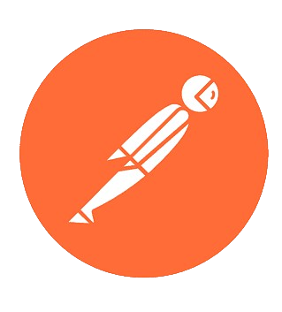

À propos
Doté d’un tempérament curieux depuis le lycée, un intérêt marqué s’est progressivement développé
pour de nombreux domaines gravitant autour des technologies.
Le parcours suivi au baccalauréat technologique a permis la découverte de l’électronique et des
principes fondamentaux de l’ingénierie, éveillant un attrait durable pour les systèmes
techniques et leur fonctionnement.
Actuellement en BUT Informatique, l’objectif est d’acquérir une base solide dans le monde du
numérique. Désormais en deuxième année, le choix du parcours D.A.C.S (Déploiement d’Applications
Communicantes et Sécurisées) s’inscrit dans une volonté d’évoluer au plus près du bas niveau
informatique, tout en ouvrant des perspectives dans les domaines des réseaux et de la
cybersécurité.
Par ailleurs, une passion de longue date pour la cartographie s’est affirmée. Celle-ci trouve
une cohérence naturelle avec le parcours informatique, la cartographie moderne reposant
largement sur la géoinformatique, le traitement des données et, plus récemment, sur des
technologies de pointe telles que le LiDAR.
Ce portfolio a pour vocation de retracer mon parcours académique et de présenter l'ensemble de mes projets, reflétant à la fois mes compétences techniques, mon engagement et ma volonté constante d'apprendre et d'innover.
Outils maîtrisés

PostmanPL/SQL
Parcours
Bachelor Universitaire de Technologie (BUT) Informatique
2024 – Aujourd'huiIUT de Montpellier, parcours D.A.C.S (Déploiement d'applications communicantes et sécurisées). Spécialisation en réseaux, cybersécurité et développement.
Baccalauréat – Lycée Jean Mermoz
2021 - 2024Baccalauréat mention bien.
Recherche d'alternance
Septembre 2026Actuellement à la recherche d'une alternance en informatique pour ma 3ème année de BUT (parcours D.A.C.S), à partir de septembre 2026.
Stage DevOps – Métropole de Montpellier
Avril – Juin 2026Stage de fin de deuxième année de BUT Informatique au sein de la Métropole de Montpellier autour des pratiques DevOps : automatisation, intégration continue et infrastructure.
Stage d'observation – PROBY
Avril 2020Découverte du fonctionnement du service informatique de l'entreprise PROBY.